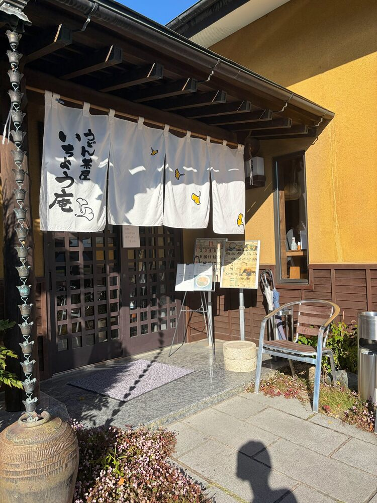
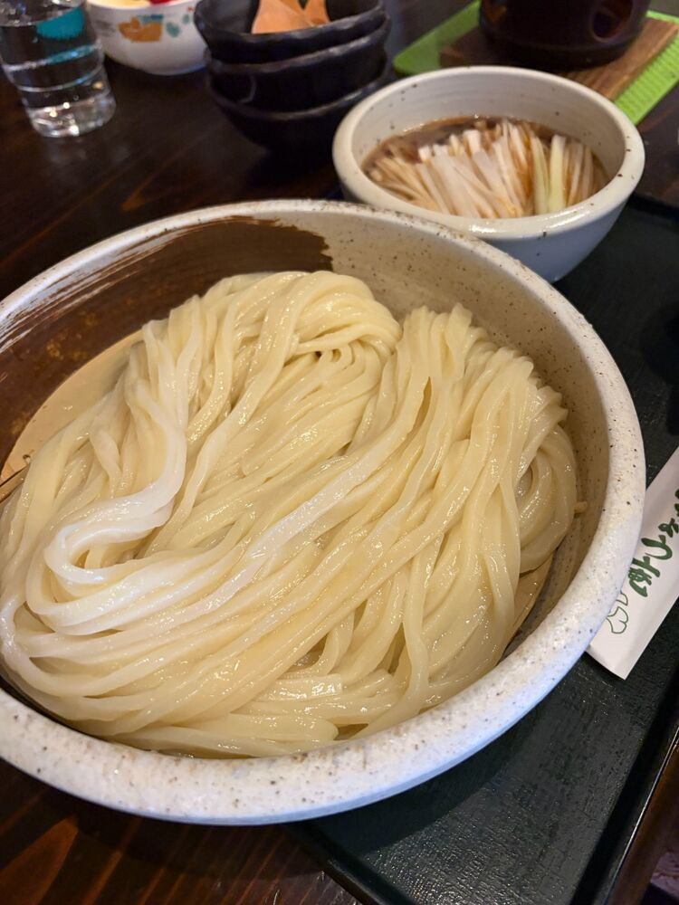
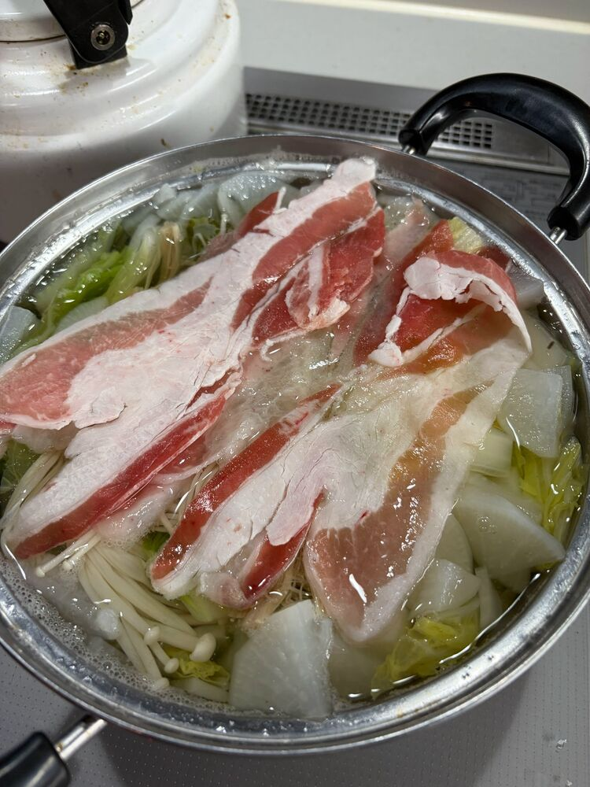
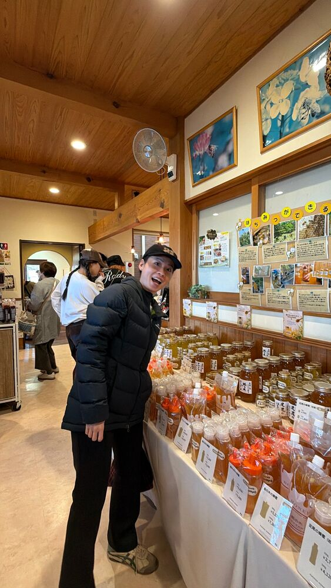

In Japan, when a noren hangs at the door, it means: come in, we are open.
For lunch we went to Udon Chaya Ichouan (うどん茶屋 いちょう庵) in Kanuma. A white noren (暖簾) curtain with yellow ginkgo leaves hangs at the door. “Ichou” means ginkgo, and in late November ginkgo trees in Japan turn bright yellow.

A soba town that loves udon
Kanuma is famous for soba, but this shop makes its own udon: thick, white and chewy. I had cold udon with tempura — shrimp, eggplant, mushroom and a big green leaf tempura.
Yakumi and slurping
On the side: yakumi (薬味) — sesame, grated ginger and daikon, green onion. Add them little by little and the taste changes with each bite. And yes, slurping is not rude in Japan. Before eating we say “itadakimasu,” and after, “gochisousama deshita.”

Nabe night at home
At home it was cold and dark, so I made nabe (鍋): daikon, napa cabbage, enoki and pork in one pot. In Japan, when it gets cold, nabe season starts. We say nabe wo kakomu (鍋を囲む) — “to sit around the pot.”

Dessert: kokko from Shizuoka
After dinner we had kokko (こっこ), a soft steamed cake with milk cream inside, a famous sweet from Shizuoka. Someone travels, brings back a local sweet, and the family shares it. That is omiyage culture.

A pickle museum, honey, udon, nabe and a sweet from another prefecture. A perfect Japanese day.
Want to visit? The udon shop's hours and closed day, my one-day Tochigi route and my simple winter nabe recipe is for my supporters on Buy Me a Coffee (from $3/month): read Kaho's practical guide. Your support helps me keep exploring rural Japan and sharing the places tourists don't see. Thank you 🌾